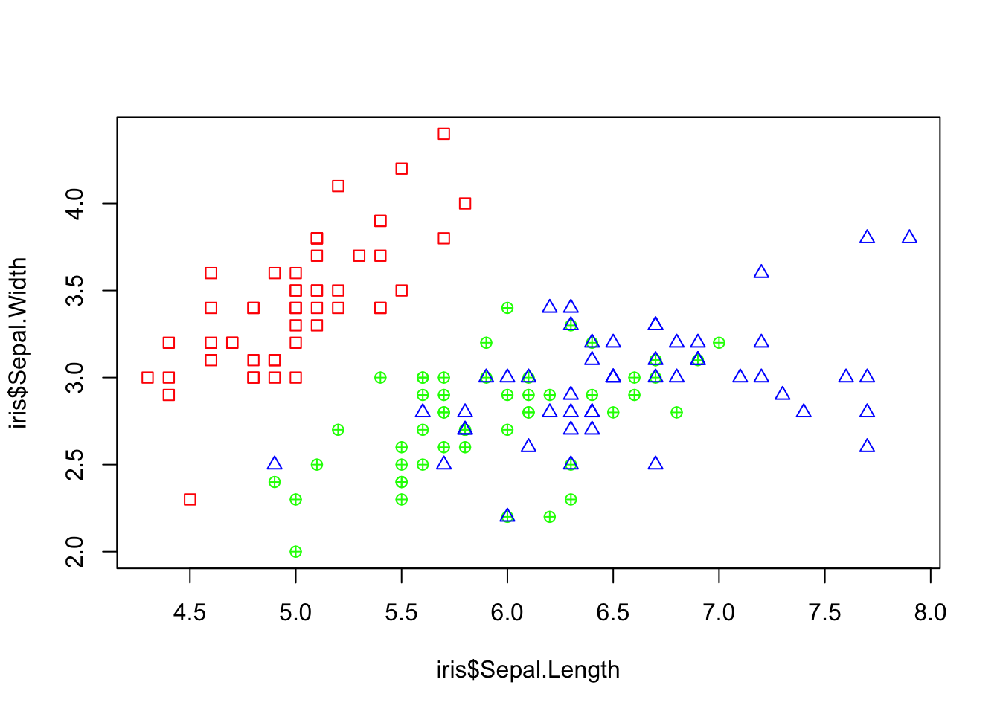
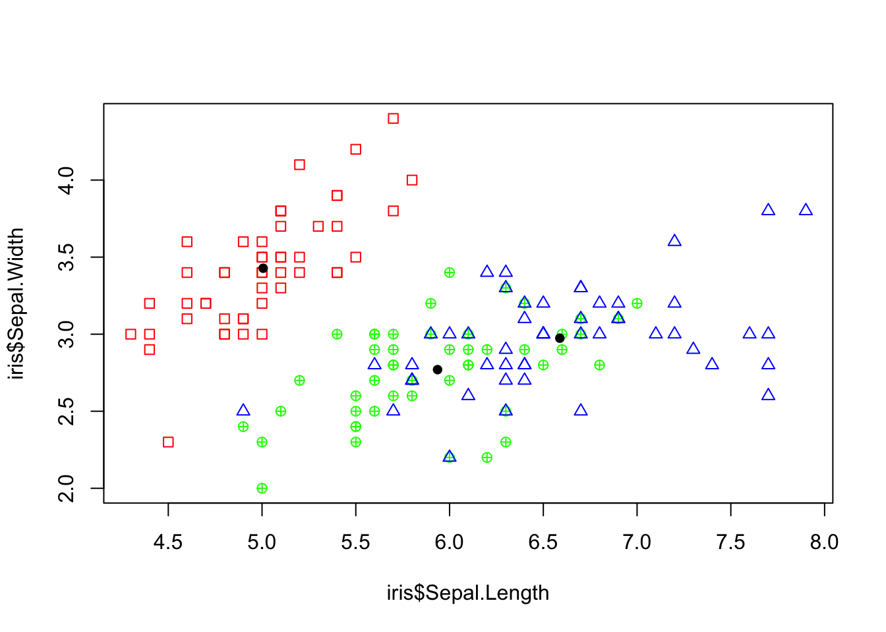

Chapter 17 Apply Family of Functions
Loops (like for, and while) are a way to repeatedly execute some code. However, they are often slow in execution when it comes to processing large data sets.
R has a more efficient and quick approach to perform iterations – The apply family.
The apply family consists of vectorized functions. Below are the most common forms of apply functions.
apply()lapply()sapply()tapply()mapply()replicate()
These functions let you take data in batches and process the whole batch at once.
There primary difference is in the object (such as list, matrix, data frame etc.) on which the function is applied to and the object that will be returned from the function.
These functions apply a function to different components of a vector/list/dataframe/array in a non-sequential way. In general, if each element in your object is not dependent on the other elements of your object then an apply function is usually faster than a loop.

17.1 apply()
The apply()function is used to apply a function to the rows or columns of arrays (matrices). It assembles the returned values, and then returns it in a vector, array, or list.
If you want to apply a function on a data frame, make sure that the data frame is homogeneous (i.e. either all numeric values or all character strings). Otherwise, R will force all columns to have identical types using as.matrix(). This may not be what you want. In that case, you might consider using the lapply() or sapply() functions instead.
Description of the required apply() arguments:
X: A array (or matrix)MARGIN: A vector giving the subscripts which the function will be applied over.- 1 indicates rows
- 2 indicates columns
- c(1, 2) indicates rows and columns
FUN: The function to be applied...: Additional arguments to be passed to “FUN”
Example: Built In Function
## [,1] [,2] [,3]
## [1,] 1 4 7
## [2,] 2 5 8
## [3,] 3 6 9## [1] 2 5 8## [1] 12 15 18Example: User Defined Function
You can use user-defined functions as well.
apply(data, 2, function(x){
# Standard deviation formula
y <- sum(x -mean(x))^2/(length(x)-1)
return(y)
})## [1] 0 0 017.1.1 Returned Objects
The values that apply() returns depends on the function FUN. If FUN returns an element of length 1, then apply() will return a vector. If FUN always returns an element of length n>1, then apply() will return a matrix with n rows, and the number of columns will correspond to how many rows/columns were iterated over. Lastly, if FUN returns an object that would vary in length, then apply() will return a list where each element corresponds to a row or column that was iterated over. In short, apply() prioritizes returning a vector, array (or matrix), and list (in that order). What is returned depends on the output of FUN.
17.1.2 Example: Extra Arguments, Array Output
x <- cbind(x1 = 3, x2 = c(4:1, 2:5))
fun1 <- function(x, c1, c2){
mean_vec <- c(mean(x[c1]), mean(x[c2]))
return(mean_vec)
}
apply(x, 1, fun1, c1 = "x1", c2 = c("x1","x2"))## [,1] [,2] [,3] [,4] [,5] [,6] [,7] [,8]
## [1,] 3.0 3 3.0 3 3.0 3 3.0 3
## [2,] 3.5 3 2.5 2 2.5 3 3.5 417.1.3 Example: List Output
mat <- matrix(c(-1, 1, 0,
2, -2, 20,
62,-2, -6), nrow = 3)
CheckPos <- function(Vec){
# Subset values of Vec that are even
PosVec <- Vec[Vec > 0]
# Return only the even values
return(PosVec)
}
# Check Positive values by column
apply(mat, 2, CheckPos)## [[1]]
## [1] 1
##
## [[2]]
## [1] 2 20
##
## [[3]]
## [1] 6217.2 lapply()
The lapply() function is used to apply a function to each element of the list. It collects the returned values into a list, and then returns that list which is of the same length.
Description of the required lapply() arguments:
X: A listFUN: The function to be applied...: Additional arguments to be passed toFUN
## $item1
## [1] 1 2 3 4 5
##
## $item2
## [1] 4 12 20 28 36
##
## $item3
## [1] 1 3 5 7 9## [1] 1 2 3 4 5 6 7 8## $item1
## [1] 15
##
## $item2
## [1] 100
##
## $item3
## [1] 25## [[1]]
## [1] 1
##
## [[2]]
## [1] 2
##
## [[3]]
## [1] 3
##
## [[4]]
## [1] 4
##
## [[5]]
## [1] 5
##
## [[6]]
## [1] 6
##
## [[7]]
## [1] 7
##
## [[8]]
## [1] 8x <- list(a = 1:10,
beta = exp(-3:3),
logic = c(TRUE,FALSE,FALSE,TRUE))
# compute the list mean for each list element
lapply(x, mean)## $a
## [1] 5.5
##
## $beta
## [1] 4.535125
##
## $logic
## [1] 0.5Unlike apply(), lapply() will always return a list. If the argument X is an object that is something other than a list then the as.list() function will be used to convert that object. Consider the built-in data set iris in R. If we use the as.list() function, each column will be converted into an element of a list.
## Sepal.Length Sepal.Width Petal.Length Petal.Width Species
## 1 5.1 3.5 1.4 0.2 setosa
## 2 4.9 3.0 1.4 0.2 setosa
## 3 4.7 3.2 1.3 0.2 setosa
## 4 4.6 3.1 1.5 0.2 setosa
## 5 5.0 3.6 1.4 0.2 setosa
## 6 5.4 3.9 1.7 0.4 setosa## List of 5
## $ Sepal.Length: num [1:150] 5.1 4.9 4.7 4.6 5 5.4 4.6 5 4.4 4.9 ...
## $ Sepal.Width : num [1:150] 3.5 3 3.2 3.1 3.6 3.9 3.4 3.4 2.9 3.1 ...
## $ Petal.Length: num [1:150] 1.4 1.4 1.3 1.5 1.4 1.7 1.4 1.5 1.4 1.5 ...
## $ Petal.Width : num [1:150] 0.2 0.2 0.2 0.2 0.2 0.4 0.3 0.2 0.2 0.1 ...
## $ Species : Factor w/ 3 levels "setosa","versicolor",..: 1 1 1 1 1 1 1 1 1 1 ...Then if we use lapply() it will iterate over the columns. We can find all values within a column that are bigger than the column mean (just looking at the numeric columns though).
lapply(iris[,1:4], function(column){
big_values <- column[column > mean(column)]
return(big_values)
})## $Sepal.Length
## [1] 7.0 6.4 6.9 6.5 6.3 6.6 5.9 6.0 6.1 6.7 6.2 5.9 6.1 6.3 6.1 6.4 6.6 6.8 6.7
## [20] 6.0 6.0 6.0 6.7 6.3 6.1 6.2 6.3 7.1 6.3 6.5 7.6 7.3 6.7 7.2 6.5 6.4 6.8 6.4
## [39] 6.5 7.7 7.7 6.0 6.9 7.7 6.3 6.7 7.2 6.2 6.1 6.4 7.2 7.4 7.9 6.4 6.3 6.1 7.7
## [58] 6.3 6.4 6.0 6.9 6.7 6.9 6.8 6.7 6.7 6.3 6.5 6.2 5.9
##
## $Sepal.Width
## [1] 3.5 3.2 3.1 3.6 3.9 3.4 3.4 3.1 3.7 3.4 4.0 4.4 3.9 3.5 3.8 3.8 3.4 3.7 3.6
## [20] 3.3 3.4 3.4 3.5 3.4 3.2 3.1 3.4 4.1 4.2 3.1 3.2 3.5 3.6 3.4 3.5 3.2 3.5 3.8
## [39] 3.8 3.2 3.7 3.3 3.2 3.2 3.1 3.3 3.1 3.2 3.4 3.1 3.3 3.6 3.2 3.2 3.8 3.2 3.3
## [58] 3.2 3.8 3.4 3.1 3.1 3.1 3.1 3.2 3.3 3.4
##
## $Petal.Length
## [1] 4.7 4.5 4.9 4.0 4.6 4.5 4.7 4.6 3.9 4.2 4.0 4.7 4.4 4.5 4.1 4.5 3.9 4.8 4.0
## [20] 4.9 4.7 4.3 4.4 4.8 5.0 4.5 3.8 3.9 5.1 4.5 4.5 4.7 4.4 4.1 4.0 4.4 4.6 4.0
## [39] 4.2 4.2 4.2 4.3 4.1 6.0 5.1 5.9 5.6 5.8 6.6 4.5 6.3 5.8 6.1 5.1 5.3 5.5 5.0
## [58] 5.1 5.3 5.5 6.7 6.9 5.0 5.7 4.9 6.7 4.9 5.7 6.0 4.8 4.9 5.6 5.8 6.1 6.4 5.6
## [77] 5.1 5.6 6.1 5.6 5.5 4.8 5.4 5.6 5.1 5.1 5.9 5.7 5.2 5.0 5.2 5.4 5.1
##
## $Petal.Width
## [1] 1.4 1.5 1.5 1.3 1.5 1.3 1.6 1.3 1.4 1.5 1.4 1.3 1.4 1.5 1.5 1.8 1.3 1.5 1.2
## [20] 1.3 1.4 1.4 1.7 1.5 1.2 1.6 1.5 1.6 1.5 1.3 1.3 1.3 1.2 1.4 1.2 1.3 1.2 1.3
## [39] 1.3 1.3 2.5 1.9 2.1 1.8 2.2 2.1 1.7 1.8 1.8 2.5 2.0 1.9 2.1 2.0 2.4 2.3 1.8
## [58] 2.2 2.3 1.5 2.3 2.0 2.0 1.8 2.1 1.8 1.8 1.8 2.1 1.6 1.9 2.0 2.2 1.5 1.4 2.3
## [77] 2.4 1.8 1.8 2.1 2.4 2.3 1.9 2.3 2.5 2.3 1.9 2.0 2.3 1.817.3 sapply()
The sapply() and lapply() work basically the same.
The only difference is that lapply() always returns a list, whereas sapply() tries to simplify the result into a vector or matrix. The output for sapply() is just like the output of apply(), it depends on the dimensions of the returned value for FUN.
If the return value is a list where every element is length 1, you get a vector.
If the return value is a list where every element is a vector of the same length (> 1), you get a matrix.
If the lengths vary, simplification is impossible and you get a list.
Description of the required sapply() arguments:
X: A listFUN: The function to be applied
## $item1
## [1] 1 2 3 4 5
##
## $item2
## [1] 4 12 20 28 36
##
## $item3
## [1] 1 3 5 7 9## item1 item2 item3
## 15 100 2517.4 tapply()
The tapply() function breaks the data set up into groups and applies a function to each group.
Description of the required sapply() arguments:
X: A 1 dimensional objectINDEX: A grouping factor or a list of factorsFUN: The function to be applied
data <- data.frame(name=c("Amy","Max","Ray","Kim","Sam","Eve","Bob"),
age=c(24, 22, 21, 23, 20, 24, 21),
gender=factor(c("F","M","M","F","M","F","M")))
data## name age gender
## 1 Amy 24 F
## 2 Max 22 M
## 3 Ray 21 M
## 4 Kim 23 F
## 5 Sam 20 M
## 6 Eve 24 F
## 7 Bob 21 M## F M
## 23 2017.5 mapply()
The mapply() function is a multivariate version of sapply(). It applies FUN to the first elements of each … argument, the second elements, the third elements, and so on.
Description of the required mapply() arguments:
FUN: The function to be applied...: Arguments to vectorize over (vectors or lists of strictly positive length, or all of zero length).
## [[1]]
## [1] 4
##
## [[2]]
## [1] 3 3
##
## [[3]]
## [1] 2 2 2
##
## [[4]]
## [1] 1 1 1 117.6 replicate()
The replicate() function is a wrapper for sapply(). If we want to repeat an evaluation of an function call or an expression that does not require us to iterate through a data set or vector we can use replicate().
Description of the required replicate() arguments:
n: An integer containing the number of replications.expr: The expression (or function call) to evaluate repeatedly.
## [1] "Hello" "Hello" "Hello" "Hello"## [1] 24 24 24 24 24 24 24 24 24 24## [,1] [,2] [,3] [,4] [,5]
## [1,] "blue" "red" "red" "red" "red"
## [2,] "red" "blue" "blue" "blue" "blue"17.7 How to Pick a Method
It can be difficult at first to decide which of these apply function you may want to use. In general, we can use the flow chart below as a quick guide.

17.8 More Examples
To see some more examples of these functions in action. We will use the iris data set which is a built in data set in R. This data set has four numeric columns, and one factor column, Species. Each row is a flower, and there are four different measurements of each flower.
## Sepal.Length Sepal.Width Petal.Length Petal.Width Species
## 1 5.1 3.5 1.4 0.2 setosa
## 2 4.9 3.0 1.4 0.2 setosa
## 3 4.7 3.2 1.3 0.2 setosa
## 4 4.6 3.1 1.5 0.2 setosa
## 5 5.0 3.6 1.4 0.2 setosa
## 6 5.4 3.9 1.7 0.4 setosa## Sepal.Length Sepal.Width Petal.Length Petal.Width
## Min. :4.300 Min. :2.000 Min. :1.000 Min. :0.100
## 1st Qu.:5.100 1st Qu.:2.800 1st Qu.:1.600 1st Qu.:0.300
## Median :5.800 Median :3.000 Median :4.350 Median :1.300
## Mean :5.843 Mean :3.057 Mean :3.758 Mean :1.199
## 3rd Qu.:6.400 3rd Qu.:3.300 3rd Qu.:5.100 3rd Qu.:1.800
## Max. :7.900 Max. :4.400 Max. :6.900 Max. :2.500
## Species
## setosa :50
## versicolor:50
## virginica :50
##
##
## Find the maximum value for the numeric variables for each observation.
## [1] 5.1 4.9 4.7 4.6 5.0 5.4Determine the (arithmetic) mean of the sepal width for each species.
## setosa versicolor virginica
## 3.428 2.770 2.974Determine the (arithmetic) mean and the median of sepal width for each species.
my_avgs <- function(vec){
the_mean <- mean(vec)
the_median <- median(vec)
return_object <- c(the_mean, the_median)
names(return_object) <- c("mean", "median")
return(return_object)
}
species_avgs <- tapply(iris$Sepal.Width,
iris$Species,
my_avgs)
species_avgs## $setosa
## mean median
## 3.428 3.400
##
## $versicolor
## mean median
## 2.77 2.80
##
## $virginica
## mean median
## 2.974 3.000Make a plot of the sepal width and sepal length. Make the points differ depending on the species type.
# Starting plot, make it blank
plot(iris$Sepal.Length, iris$Sepal.Width, col = "white")
# Custom function to add the points
add_points <- function(the_data, ...){
if(the_data[5]=="setosa"){
points(x = the_data[1],
y = the_data[2],
col = "red",
pch = 0)
} else if(the_data[5]=="virginica"){
points(x = the_data[1],
y = the_data[2],
col = "blue",
pch = 2)
} else{
points(x = the_data[1],
y = the_data[2],
col = "green",
pch = 10)
}
}
# Use apply to add points
apply(iris, 1, add_points)
## NULLMake a plot of the sepal width and sepal length. Make the points differ depending on the species type. Add the (arithmetic) mean of these two variables for each group.
# ------ PLOT FROM BEFORE
# Starting plot, make it blank
plot(iris$Sepal.Length, iris$Sepal.Width, col = "white")
apply(iris, 1, add_points)## NULL# ------
# Split the data into a list by factor
split_iris = split(iris, f = iris$Species)
# Iterate through the list and add (black) points to the plot
lapply(split_iris, function(species_data){
points(mean(species_data$Sepal.Length),
mean(species_data$Sepal.Width),
pch = 16)
})
## $setosa
## NULL
##
## $versicolor
## NULL
##
## $virginica
## NULLLets try using another example. Suppose we wish to use the following formula (below) with a = Sepal.Length, b = Sepal.Width, and c = Petal.Length.
\[ \frac{-b + \sqrt{b^2-4ac} }{2a}\]
Now there is more efficient ways to do this in R, but lets practice how we would do it with mapply as an example.
my_formula <- function(a, b, c){
num <- (-b + sqrt(b^2 + 4*a*c))
den <- 2*a
answer <- num/den
return(answer)
}
formula_results <- mapply(my_formula,
a = iris$Sepal.Length,
b = iris$Sepal.Width,
c = iris$Petal.Length)
head(formula_results)## [1] 0.2831638 0.3098526 0.2860609 0.3260870 0.2800000 0.306134017.8.1 Create a New Variable
petal_size <- function(PLength, BigCutOff, ModerateCutOff, SmallCutOff){
if(PLength > BigCutOff){
PetalSize <- "Big"
} else if (PLength > ModerateCutOff){
PetalSize <- "Moderate"
} else if(PLength > SmallCutOff){
PetalSize <- "Small"
} else{
PetalSize <- "Very Small"
}
return(PetalSize)
}
sapply(iris$Petal.Length, # Data
petal_size, # Function
BigCutOff = 5, # Optional Arguments for function
ModerateCutOff = 4,
SmallCutOff = 1.5)## [1] "Very Small" "Very Small" "Very Small" "Very Small" "Very Small"
## [6] "Small" "Very Small" "Very Small" "Very Small" "Very Small"
## [11] "Very Small" "Small" "Very Small" "Very Small" "Very Small"
## [16] "Very Small" "Very Small" "Very Small" "Small" "Very Small"
## [21] "Small" "Very Small" "Very Small" "Small" "Small"
## [26] "Small" "Small" "Very Small" "Very Small" "Small"
## [31] "Small" "Very Small" "Very Small" "Very Small" "Very Small"
## [36] "Very Small" "Very Small" "Very Small" "Very Small" "Very Small"
## [41] "Very Small" "Very Small" "Very Small" "Small" "Small"
## [46] "Very Small" "Small" "Very Small" "Very Small" "Very Small"
## [51] "Moderate" "Moderate" "Moderate" "Small" "Moderate"
## [56] "Moderate" "Moderate" "Small" "Moderate" "Small"
## [61] "Small" "Moderate" "Small" "Moderate" "Small"
## [66] "Moderate" "Moderate" "Moderate" "Moderate" "Small"
## [71] "Moderate" "Small" "Moderate" "Moderate" "Moderate"
## [76] "Moderate" "Moderate" "Moderate" "Moderate" "Small"
## [81] "Small" "Small" "Small" "Big" "Moderate"
## [86] "Moderate" "Moderate" "Moderate" "Moderate" "Small"
## [91] "Moderate" "Moderate" "Small" "Small" "Moderate"
## [96] "Moderate" "Moderate" "Moderate" "Small" "Moderate"
## [101] "Big" "Big" "Big" "Big" "Big"
## [106] "Big" "Moderate" "Big" "Big" "Big"
## [111] "Big" "Big" "Big" "Moderate" "Big"
## [116] "Big" "Big" "Big" "Big" "Moderate"
## [121] "Big" "Moderate" "Big" "Moderate" "Big"
## [126] "Big" "Moderate" "Moderate" "Big" "Big"
## [131] "Big" "Big" "Big" "Big" "Big"
## [136] "Big" "Big" "Big" "Moderate" "Big"
## [141] "Big" "Big" "Big" "Big" "Big"
## [146] "Big" "Moderate" "Big" "Big" "Big"